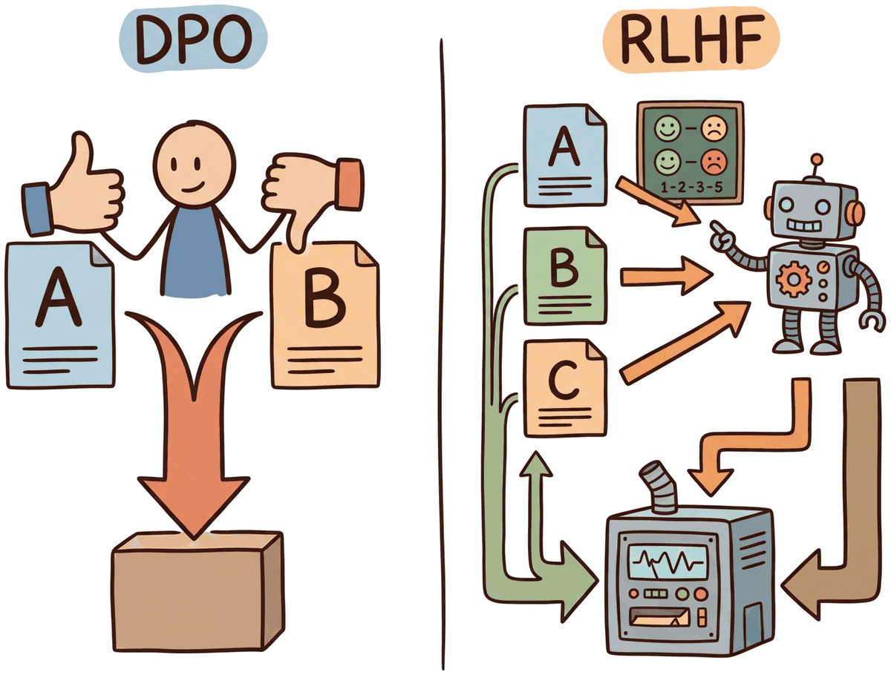

Your language model is secretly a reward model. You just need the right loss function to reveal it.
Reward, Secretly Rewarding AI Agent
DPO achieves RLHF-level alignment without reinforcement learning. The key insight is mathematical: the optimal policy under the RLHF objective has a closed-form relationship with the reward function. This can be implemented efficiently using parameter-efficient methods like LoRA. This means you can reparameterize the reward model loss directly in terms of the policy, training the language model on preference pairs using a simple classification-like objective. No reward model, no RLHF, no value network. Building on the RLHF pipeline from Section 18.1, this dramatically simplifies the alignment pipeline and has spawned an entire family of "direct alignment" methods (KTO, ORPO, SimPO, IPO) that each address different limitations of the original formulation.
Prerequisites
Before starting, make sure you are familiar with alignment overview as covered in Section 18.1: RLHF: Reinforcement Learning from Human Feedback.

18.3.1 The DPO Derivation
The β parameter is doing double duty. Mathematically, β is the inverse temperature of the Bradley-Terry preference model and the KL-penalty strength against the reference policy. These are not independent: a high β both sharpens the preference signal (steeper accept/reject decisions) and constrains the policy closer to the reference. The classic failure modes have orthogonal causes: too-low β lets the policy drift into low-likelihood regions where the reference probabilities are noise, producing incoherent text; too-high β underweights the preference signal and you get a model that is well-behaved but indistinguishable from the SFT model. The reader should understand they are tuning two physical effects with one number.
The Z(x) cancellation hides an important caveat: because preference data was collected under the reference policy, the implicit reward estimates are only valid in the neighborhood of that policy. When the trained policy drifts far, the offline assumption breaks. This is why online iterative DPO variants outperform vanilla DPO at scale (Guo et al., 2024). The gap between offline and online alignment is a central open problem; Azar et al. (2024), "A General Theoretical Paradigm to Understand Learning from Human Feedback," formalizes it: DPO corresponds to minimizing a KL-penalized reward on the offline data distribution, with implicit rewards reliable only locally.
The DPO paper says "Z(x) cancels" but rarely shows the algebra. Here it is. The optimal policy under KL-constrained RL has the form:
where Z(x) is the partition function. Rearranging gives the implicit reward:
For a preference pair (yw, yl), the Bradley-Terry loss uses the difference r(x, yw) − r(x, yl):
The β log Z(x) terms cancel exactly, they appear with the same sign on both completions and subtract to zero. The implicit reward becomes a function of log-probability ratios only, computable from π* and πref alone. No reward model needed. This is the entire trick.
DPO's elegance is almost suspiciously simple. The entire RLHF pipeline (reward model training, PPO with value networks, careful hyperparameter tuning, and multiple GPU jobs) collapses into a single supervised learning objective that fits in a few lines of code. When the DPO paper was first circulated, many researchers assumed there must be a catch. The catch, it turned out, is that DPO is more sensitive to the quality of preference data than RLHF, which can partially compensate for noisy preferences through its reward model.
Direct Preference Optimization (Rafailov et al., 2023) begins with the same objective as RLHF: maximize expected reward while staying close to a reference policy. The standard RLHF objective is:
Think of DPO as running a continuous A/B taste test. Instead of training a separate judge (reward model) to score each dish, you directly show the chef two dishes and tell them which one the diners preferred. The chef adjusts their technique to produce more of the preferred dish and less of the rejected one. This eliminates the middleman (the reward model) and its potential biases, making the training pipeline simpler and more stable, though it requires more carefully curated preference data.
The optimal solution to this constrained optimization problem has a closed-form expression:
where Z(x) is the partition function that normalizes the distribution. The crucial step in DPO is rearranging this expression to solve for the reward in terms of the policy:
When we substitute this into the Bradley-Terry preference model, the partition function Z(x) cancels (since it appears in both the chosen and rejected terms), yielding the DPO loss:
That objective ships in TRL as the DPOTrainer; Code Fragment 18.3.0 is the smallest invocation that runs.
# Minimal DPO training loop with TRL: two models, one preference dataset.
from trl import DPOTrainer, DPOConfig
from transformers import AutoModelForCausalLM, AutoTokenizer
from datasets import load_dataset
base = "Qwen/Qwen2.5-0.5B-Instruct"
policy = AutoModelForCausalLM.from_pretrained(base)
ref = AutoModelForCausalLM.from_pretrained(base) # frozen reference
tokenizer = AutoTokenizer.from_pretrained(base)
preference_ds = load_dataset("trl-lib/ultrafeedback_binarized", split="train[:1%]")
cfg = DPOConfig(output_dir="./dpo", beta=0.1, per_device_train_batch_size=2,
num_train_epochs=1, learning_rate=5e-7, bf16=True)
DPOTrainer(model=policy, ref_model=ref, args=cfg,
train_dataset=preference_ds, tokenizer=tokenizer).train()
Code Fragment 18.3.0: Smallest end-to-end DPO call. The policy and a frozen reference share the same checkpoint at start; beta=0.1 is the canonical KL strength, and the preference dataset must expose prompt, chosen, and rejected columns.
Picture a kitchen balance scale. On the left pan goes the chosen response $y_w$, on the right pan the rejected $y_l$. The number on each pan is the policy's log-probability for that answer measured against the reference: $\log \pi(y \mid x) - \log \pi_{\text{ref}}(y \mid x)$. Every preference pair in the training data is a verdict that the left pan should sit lower than the right. The signed gap between the pans, multiplied by $\beta$, is the margin: positive when the policy already prefers the right answer, zero at the tipping point, negative when it still picks the wrong one. The sigmoid in $\log \sigma(\text{margin})$ converts that signed gap into a probability that the policy would re-rank the pair correctly.
Training is the slow tilt: gradient descent puts a little more weight on the chosen pan and lifts the rejected pan, pair by pair, until the scale tips in the human-preferred direction for the whole dataset. Pairs that already tip decisively contribute almost zero loss (the sigmoid saturates near 1), so the gradient concentrates on the borderline pairs still teetering near balance. $\beta$ controls how aggressively each verdict moves the pans: small $\beta$ permits gentle tilts and larger policy shifts away from the reference; large $\beta$ keeps each verdict polite and the policy glued to the SFT starting point.
Algorithm: Side-by-side update step for one preference pair (x, y_w, y_l)
Shared setup:
pi_theta: current policy (the model we update)
pi_ref : frozen reference (usually the SFT checkpoint)
beta : KL strength
------------------------------------------------------------------
PPO-RLHF (Algorithm 18.1.2 inner loop):
------------------------------------------------------------------
1. Sample y ~ pi_theta(. | x)
2. r := R_phi(x, y) - beta * (log pi_theta(y|x) - log pi_ref(y|x)) // KL-shaped reward
3. Compute advantage A using value head V_psi (GAE)
4. ratio := exp( log pi_theta(y|x) - log pi_theta_old(y|x) )
5. L_PPO := - E [ min( ratio * A, clip(ratio, 1-eps, 1+eps) * A ) ]
+ c_v * (V_psi - r)^2 - c_e * entropy(pi_theta)
6. Requires: policy + value + reward + frozen reference (4 models in GPU)
------------------------------------------------------------------
DPO:
------------------------------------------------------------------
1. Use the offline pair (y_w, y_l) directly, no sampling, no R_phi
2. h_w := beta * ( log pi_theta(y_w|x) - log pi_ref(y_w|x) ) // implicit reward, chosen
3. h_l := beta * ( log pi_theta(y_l|x) - log pi_ref(y_l|x) ) // implicit reward, rejected
4. L_DPO := - log sigmoid( h_w - h_l )
5. Gradient (chain rule):
grad L_DPO = -beta * sigmoid( h_l - h_w ) *
( grad log pi_theta(y_w|x) - grad log pi_theta(y_l|x) )
6. Requires: policy + frozen reference only (2 models in GPU)
Equivalence (Rafailov et al., 2023, Theorem 1):
Both methods optimize the same KL-constrained preference objective
max E_{y ~ pi} [ R_phi(x, y) ] - beta * KL( pi(.|x) || pi_ref(.|x) ),
but DPO substitutes the closed-form optimum
R_phi(x, y) = beta * log( pi(y|x) / pi_ref(y|x) ) + const
so the reward model is implicit in the policy's log-ratio.
Trade-offs:
- PPO needs online sampling and a stable value head; DPO is purely supervised.
- DPO uses offline data only; it inherits OOD weaknesses if pi_theta drifts far
from the pairs' generator. PPO can sample from its current policy and stay
on-distribution.
- PPO supports a learned reward that can be reused across runs; DPO ties the
"reward" to the specific policy / reference combination.Sources: Schulman et al., "Proximal Policy Optimization Algorithms" (arXiv:1707.06347, 2017) for PPO; Rafailov, Sharma, et al., "Direct Preference Optimization: Your Language Model is Secretly a Reward Model," NeurIPS 2023 (arXiv:2305.18290) for DPO. Modern variants (IPO, KTO, ORPO, SimPO) all keep the same structure and only modify the loss; the architectural saving (no separate reward and value heads in GPU) is the practical reason DPO and friends now dominate small-team alignment workflows.
To make this concrete, consider a single preference pair with β = 0.1. Suppose the policy assigns log-probability −2.0 to the chosen response and −3.5 to the rejected response, while the reference assigns −2.3 and −3.0 respectively:
# Numeric walkthrough of a single DPO loss evaluation
import math
beta = 0.1
log_pi_chosen, log_pi_rejected = -2.0, -3.5
log_ref_chosen, log_ref_rejected = -2.3, -3.0
log_ratio_chosen = log_pi_chosen - log_ref_chosen # -2.0 - (-2.3) = 0.3
log_ratio_rejected = log_pi_rejected - log_ref_rejected # -3.5 - (-3.0) = -0.5
margin = beta * (log_ratio_chosen - log_ratio_rejected) # 0.1 * (0.3 - (-0.5)) = 0.08
loss = -math.log(1 / (1 + math.exp(-margin))) # -log(sigmoid(0.08)) = 0.653
print(f"margin={margin:.2f}, loss={loss:.3f}") # margin=0.08, loss=0.653margin=0.08, loss=0.653
The DPO loss has an elegant interpretation: it pushes the policy to increase the log-probability of chosen responses (relative to the reference) while decreasing the log-probability of rejected responses. The reference model acts as an implicit anchor, playing the same role as the KL penalty in PPO. The β parameter controls how aggressively the policy deviates from the reference.
Who: Product team at an enterprise software company
Situation: The company's internal AI assistant needed to match the corporate communication style: professional, concise, and avoiding casual language or humor in customer-facing drafts.
Problem: RLHF was too complex for the small ML team (three engineers), requiring a separate reward model, PPO infrastructure, and careful hyperparameter tuning across multiple models.
Dilemma: SFT on style-matched examples improved tone but introduced regressions in factual accuracy; the model learned surface patterns without internalizing the preference structure.
Decision: They chose DPO because it required only preference pairs (no reward model), reducing the pipeline from three models to one training loop.
How: The team collected 5,000 preference pairs where employees chose between two response drafts for the same prompt. They trained with beta=0.1 for 2 epochs using TRL's DPOTrainer.
Result: The DPO-aligned model achieved 87% preference win rate against the SFT baseline in blind evaluation, matching the quality of a comparable RLHF setup while requiring 60% less engineering effort and no reward model infrastructure.
Lesson: For teams without dedicated RL infrastructure, DPO delivers alignment quality comparable to RLHF with dramatically simpler implementation; the key investment is collecting high-quality preference pairs.
contrasts the RLHF and DPO pipelines, highlighting how DPO eliminates the reward model and PPO stages.
DPO (Direct Preference Optimization) eliminated the need for a separate reward model by baking preference learning directly into the language model's training loss. It is like cutting out the middleman in a supply chain: fewer moving parts, fewer things to break. Code Fragment 18.3.7 shows this approach in practice.
The following implementation (Code Fragment 18.3.7a) shows this approach in practice.
# DPO Training with TRL
from trl import DPOTrainer, DPOConfig
from transformers import AutoModelForCausalLM, AutoTokenizer
from datasets import load_dataset
# Load SFT model as starting point
model = AutoModelForCausalLM.from_pretrained(
"./sft-llama-8b-final",
torch_dtype="bfloat16",
)
ref_model = AutoModelForCausalLM.from_pretrained(
"./sft-llama-8b-final",
torch_dtype="bfloat16",
)
tokenizer = AutoTokenizer.from_pretrained("./sft-llama-8b-final")
# Load preference dataset
# Must have: prompt, chosen, rejected columns
dataset = load_dataset("argilla/ultrafeedback-binarized-preferences", split="train")
print(f"Dataset size: {len(dataset)}")
print(f"Columns: {dataset.column_names}")
# prompt: the user query
# chosen: the preferred response
# rejected: the less-preferred response
# DPO training configuration
dpo_config = DPOConfig(
output_dir="./dpo-llama-8b",
beta=0.1, # KL penalty strength
per_device_train_batch_size=2,
gradient_accumulation_steps=16,
learning_rate=5e-7, # small LR for stability
num_train_epochs=1,
max_length=2048,
max_prompt_length=1024,
warmup_ratio=0.1,
logging_steps=10,
bf16=True,
loss_type="sigmoid", # standard DPO loss
# Advanced options
label_smoothing=0.0, # 0.1 can help with noisy preferences
precompute_ref_log_probs=True, # saves memory
)
trainer = DPOTrainer(
model=model,
ref_model=ref_model,
args=dpo_config,
train_dataset=dataset,
tokenizer=tokenizer, # use processing_class in TRL >= 0.14
)
trainer.train()
trainer.save_model("./dpo-llama-8b-final")
Dataset size: 61135
Columns: ['source', 'chosen', 'rejected', 'prompt', 'chosen_rating', 'rejected_rating']
{'train_loss': 0.5823, 'train_runtime': 2146.1, 'train_samples_per_second': 1.71}
Why DPO avoids reward model training (and why that matters). The mathematical insight behind DPO is elegant: the optimal policy under the RLHF objective has a closed-form relationship to the reward function. This means you can reparameterize the reward in terms of the policy itself, eliminating the reward model entirely. In practice, this removes an entire stage of training (reward model fitting), eliminates reward hacking (where the policy exploits flaws in the reward model), and reduces the total compute budget by roughly 50%. The tradeoff is that DPO requires high-quality preference data where the chosen/rejected distinction is clear; it is less forgiving of noisy preferences than RLHF, which can learn a smooth reward function that tolerates annotation noise.
Fine-tune a 1B base model with DPO on 1000 preference pairs using beta in {0.01, 0.1, 0.3, 1.0}. Report win-rate against the SFT base on a held-out 200 pairs (judged by GPT-4 or a reward model). Predict before running which beta will collapse the model.
Answer Sketch
Expected: beta=0.01 has the largest policy shift and the highest naive win-rate, but the model often exhibits repetition or mode collapse on prompts unlike training data. beta=0.1 is the canonical sweet spot (the original DPO paper's default). beta=1.0 barely moves the policy off the SFT init, so win-rate hovers near 50%. The beta=0.01 collapse is the most common failure mode in practice: the KL constraint is too weak to keep the model on-distribution.
Walk through the DPO loss and explain what would happen if you dropped the reference-model log-prob term and trained only with log pi(chosen) - log pi(rejected). Then explain why the reference model is typically frozen rather than co-trained.
Answer Sketch
Without the reference term, the loss is unbounded: the model can push log pi(chosen) arbitrarily high (or log pi(rejected) arbitrarily low) without any anchor to the SFT distribution. Training degenerates into the model assigning probability ≈1 to chosen regardless of context and forgetting everything else. The reference model is frozen because allowing it to update means both terms drift together, eliminating the regularization effect. Frozen reference = effective KL penalty toward the SFT model.
What's Next?
In the next part of this section, Section 18.4: DPO Variants, Datasets & Iterative DPO, the dpo derivation that lets a language model serve as its own reward model, and the single-model alignment objective that replaces rlhf's reward-model-plus-ppo pipeline.